library(ggplot2)
library(MASS) #To play with Boston data setWeek 4: Exploratory Data Analysis (EDA)
Objectives:
Students will
Understand what is data
Understand more about different types of attributes
Know the data quality issues
Know how to standardize the numeric variables
Know how to choose the optimal visualization tool to analyze the co-variation of two variables in R and Python
Reading Materials
Chapter 7, R for Data Science by Garrett Grolemund and Hadley Wickham, available freely online. https://r4ds.had.co.nz/exploratory-data-analysis.html
Chapter 3 & 4, Data Science Using Python and R, Print ISBN:9781119526810 , Online ISBN:9781119526865. https://onlinelibrary.wiley.com/doi/book/10.1002/9781119526865
Required Packages
Data
Question: What is Data?
Answer: Collection of data objects and their attributes.
An attribute is a property of characteristic of an object, also known as variable, field, or feature
A collection of attributes describe an object, also known as a record, observation, or instance.
A Simple Dataset
head(iris,10) Sepal.Length Sepal.Width Petal.Length Petal.Width Species
1 5.1 3.5 1.4 0.2 setosa
2 4.9 3.0 1.4 0.2 setosa
3 4.7 3.2 1.3 0.2 setosa
4 4.6 3.1 1.5 0.2 setosa
5 5.0 3.6 1.4 0.2 setosa
6 5.4 3.9 1.7 0.4 setosa
7 4.6 3.4 1.4 0.3 setosa
8 5.0 3.4 1.5 0.2 setosa
9 4.4 2.9 1.4 0.2 setosa
10 4.9 3.1 1.5 0.1 setosaAttribute
Same attribute can be mapped to different attribute values
Example: height can be measured in feet or meters
Different attributes can be mapped to the same set of values
Example: Attribute values for ID and age are integers
Types of Attributes
Qualitative
Nominal: The values are just different names
Examples: ID numbers, eye color, zip codes
Ordinal: The values are provide enough information to order objects.
Examples: rankings (e.g., taste of potato chips on a scale from 1-10), grades, height in tall, medium, short
Quantitative
Interval: The differences between values are meaningful
Examples: calendar dates, temperatures in Celsius or Fahrenheit.
Ratio: Both differences and ratios are meaningful.
Examples: temperature in Kelvin, length, time, counts
Properties of Attribute Values
- Properties of Attribute Values
| Concept | Symbols |
|---|---|
| Distinctness | = , ≠ |
| Order | < , > |
| Addition | + , − |
| Multiplication | * , / |
- Relationship with Type of Attributes
| Attribute Type | Properties |
|---|---|
| Nominal | Distinctness |
| Ordinal | Distinctness & Order |
| Interval attribute | Distinctness, Order & Addition |
| Ratio attribute | All four properties |
Discrete and Continuous Attributes
- Discrete Attribute
- Has only a finite or countably infinite set of values
Examples: zip codes, counts, or the set of words in a collection of documents
- Often represented as integer variables.
Note: binary attributes are a special case of discrete attributes.
- Has only a finite or countably infinite set of values
- Continuous Attribute
- Has real numbers as attribute values
Examples: temperature, height, or weight
- Practically, real values can only be measured and represented using a finite number of digits.
Continuous attributes are typically represented as floating-point variables.
- Has real numbers as attribute values
Examples of data quality problems:
- Noise and outliers
- Missing values
- Duplicate data
Noise
Noise refers to modification of original values
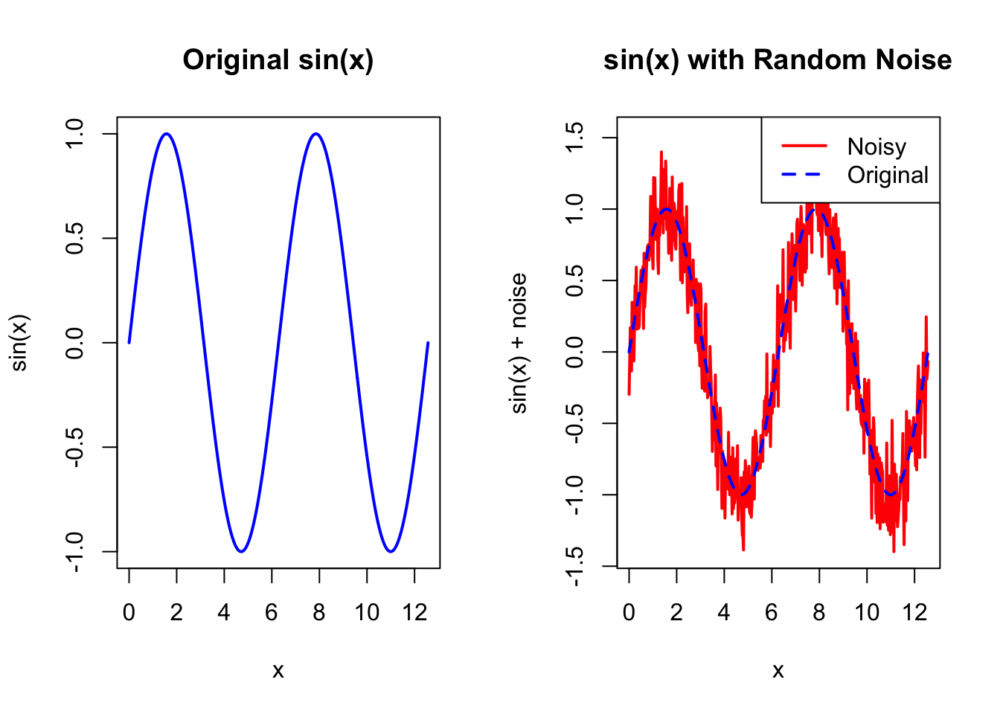
Outlier
Outliers are data objects with characteristics that are considerably different than most of the other data objects in the data set.
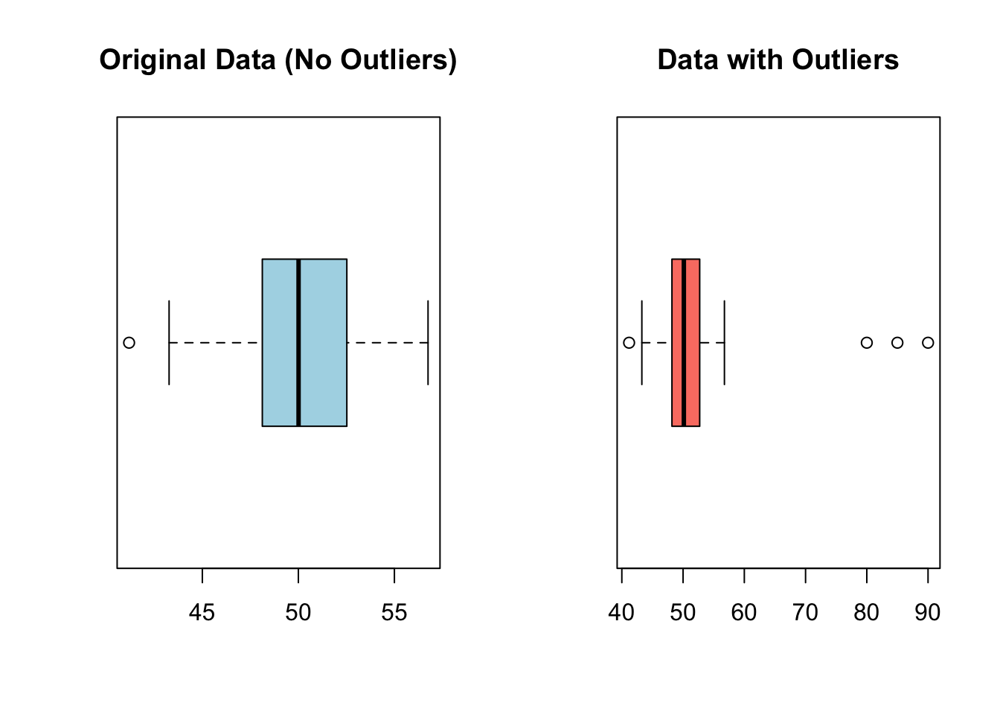
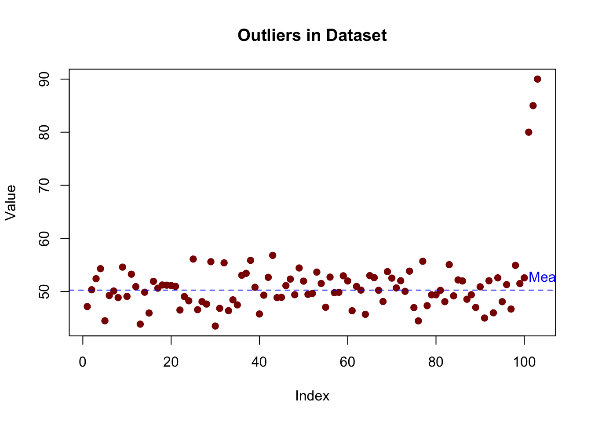
Missing Values
Reasons for missing values
- Information is not collected
- Attributes may not be applicable to all cases
Handling missing values
- Eliminate Data Objects
- Estimating Missing Values
- Ignore the Missing Value During Analysis
- Replace with all possible values (weighted by their probabilities)
Duplicate Data
Data set may include data objects that are duplicates or almost duplicates of one another
Examples: Same person with multiple email addresses
Data cleaning: Process of dealing with duplicate data issues
Standardizing the Numeric Fields
Certain algorithms perform better when the numeric fields are standardized so the filed mean equals 0 and the field standard deviation equals 1, as follows:
\[z = \frac{x-\bar{x}}{s}\]
Let’s do a standardization with medv in Boston data set
hist(Boston$medv,breaks=seq(min(Boston$medv),max(Boston$medv),l=21)) #histogram of medv in Boston data set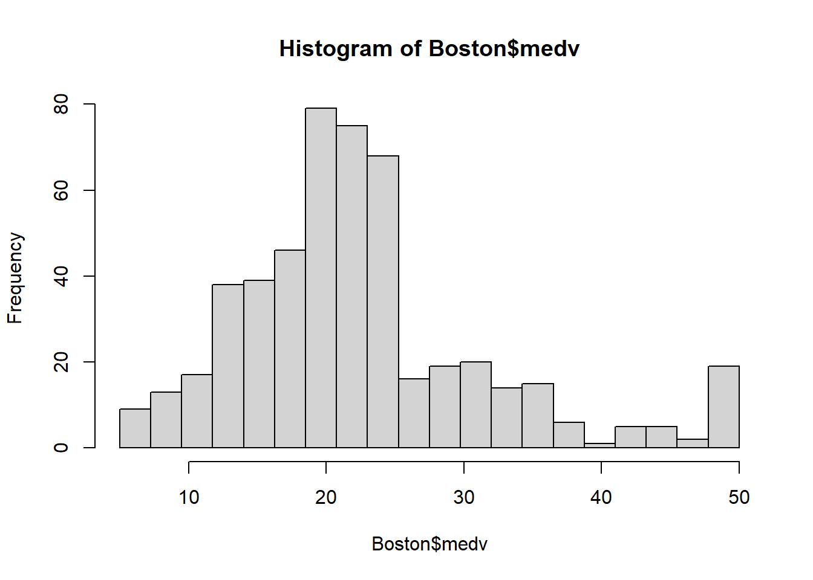
medv_z <- scale(Boston$medv) #standardizing medv
hist(medv_z,breaks =seq(min(medv_z),max(medv_z),l=21))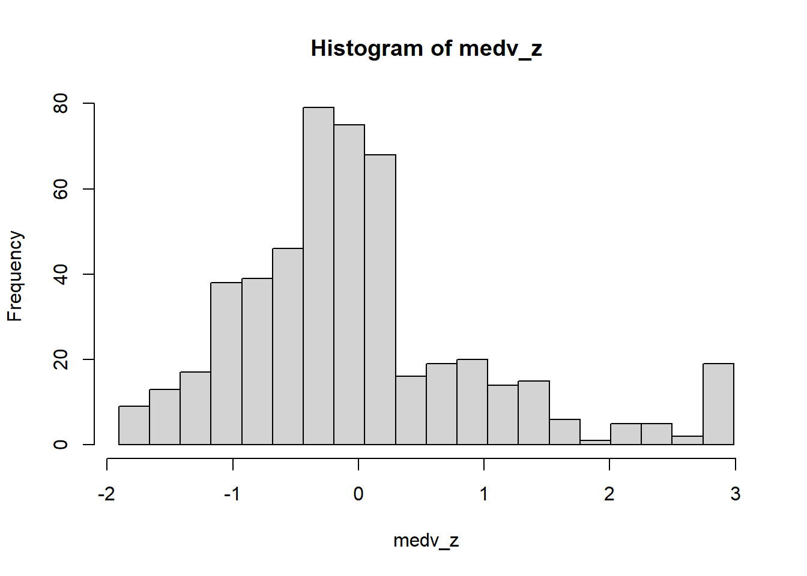
Note: We can also do normalization in python using zscore in stats. Please see Jupyter Noterbook EDA.ipynb.
Question:Why we want to do standardization?
Exploratory Data Analysis (EDA)
A task that how to use visualization and transformation to explore your data in a systematic way is called exploratory data analysis, or EDA for short.
Use graphics to explore the relationship between the predictor variables and the target variable.
Use graphics and tables to derive new variables that will increase predictive value
Next, we will play with a built-in data set diamonds in the package ggplot2 with 53940 rows and 10 variables.
#Get the genearl information of diamonds data set
summary(diamonds) carat cut color clarity depth
Min. :0.2000 Fair : 1610 D: 6775 SI1 :13065 Min. :43.00
1st Qu.:0.4000 Good : 4906 E: 9797 VS2 :12258 1st Qu.:61.00
Median :0.7000 Very Good:12082 F: 9542 SI2 : 9194 Median :61.80
Mean :0.7979 Premium :13791 G:11292 VS1 : 8171 Mean :61.75
3rd Qu.:1.0400 Ideal :21551 H: 8304 VVS2 : 5066 3rd Qu.:62.50
Max. :5.0100 I: 5422 VVS1 : 3655 Max. :79.00
J: 2808 (Other): 2531
table price x y
Min. :43.00 Min. : 326 Min. : 0.000 Min. : 0.000
1st Qu.:56.00 1st Qu.: 950 1st Qu.: 4.710 1st Qu.: 4.720
Median :57.00 Median : 2401 Median : 5.700 Median : 5.710
Mean :57.46 Mean : 3933 Mean : 5.731 Mean : 5.735
3rd Qu.:59.00 3rd Qu.: 5324 3rd Qu.: 6.540 3rd Qu.: 6.540
Max. :95.00 Max. :18823 Max. :10.740 Max. :58.900
z
Min. : 0.000
1st Qu.: 2.910
Median : 3.530
Mean : 3.539
3rd Qu.: 4.040
Max. :31.800
Information on diamonds
price: price in US dollars (\(\$326–\$18,823\))
carat: weight of the diamond (0.2–5.01)
cut: quality of the cut (Fair, Good, Very Good, Premium, Ideal)
color: diamond color, from D (best) to J (worst)
clarity: a measurement of how clear the diamond is (I1 (worst), SI2, SI1, VS2, VS1, VVS2, VVS1, IF (best))
x:length in mm (0–10.74)
y: width in mm (0–58.9)
z: depth in mm (0–31.8)
depth: total depth percentage \(= 2 * z / (x + y) (43–79)\)
table: width of top of diamond relative to widest point (43–95)
Visualization on Two Continuous Variables In R
We can use a regular plot to do that.
plot(price~carat,data = diamonds)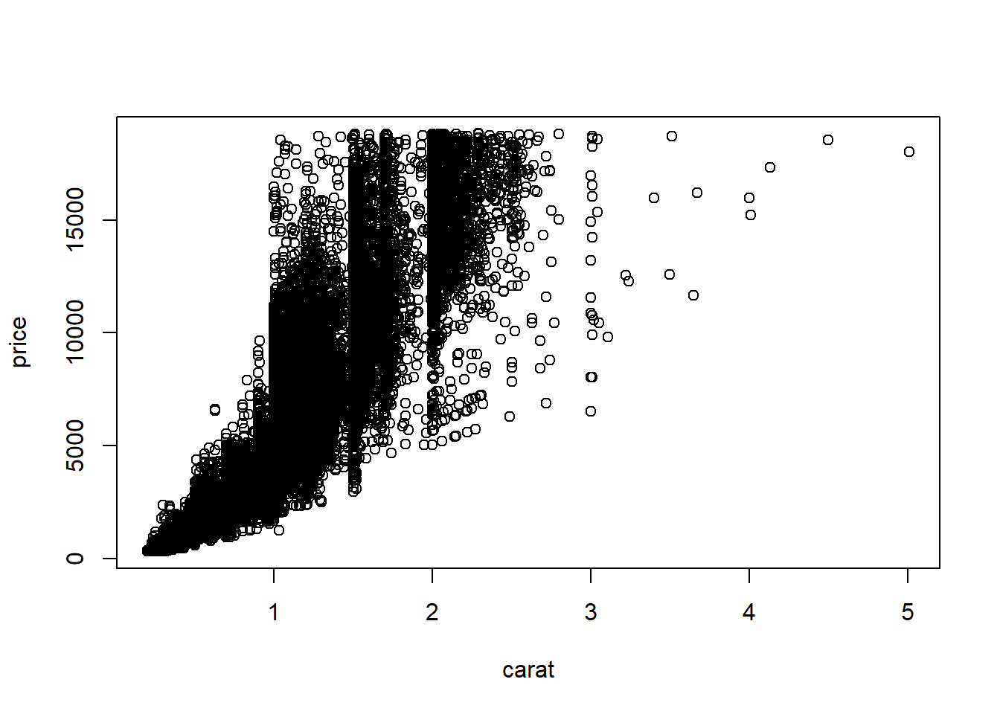
Draw a scatterplot with geom_point().
ggplot(data = diamonds) + geom_point(mapping = aes(x = carat, y = price))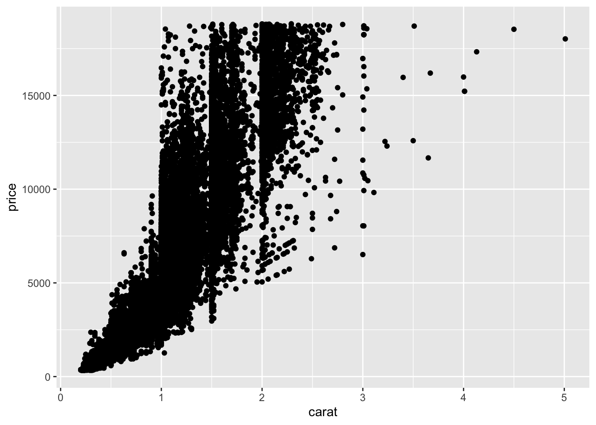
Let’s play with iris dataset.
cols <-ifelse(iris$Species == 'setosa',"yellow",ifelse(iris$Species == 'virginica',"orange","green"))
plot(Sepal.Length~Sepal.Width,data = iris,col = cols)
leg.txt <- c("Setosa", "Virgnica","Versicolor")
col.txt <- c("yellow", "orange", "green")
legend(4,8,pch = 1, leg.txt, col = col.txt)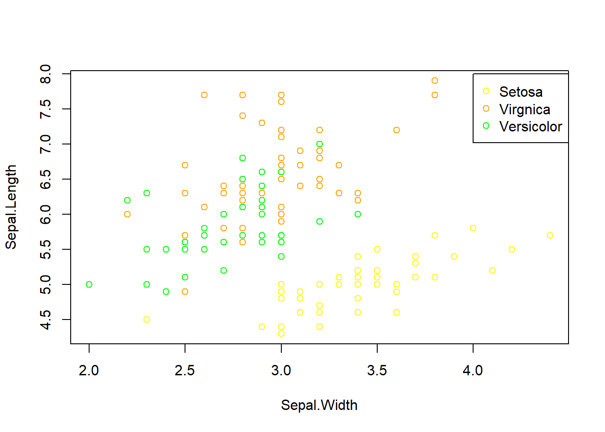
What about ggplot?
ggplot(data = iris) +
geom_point(mapping = aes(x = Sepal.Width, y = Sepal.Length,colour = Species))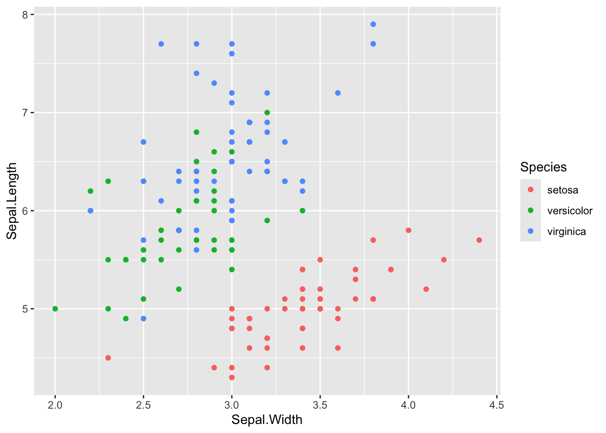
In-class Exercise: Two Continuous Variables by geom_point()
Please use
geom_point()to investigate the relationship betweendepthandprice.Please use
geom_point()to investigate the relationship betweenPetal.LengthandPetal.WidthwithSpeciesinirisdataset.
Correlation between Numerical Variables
To investigate the correlation, we can use pairs function to do the scatter plot.
pairs(iris[,1:4], col = cols)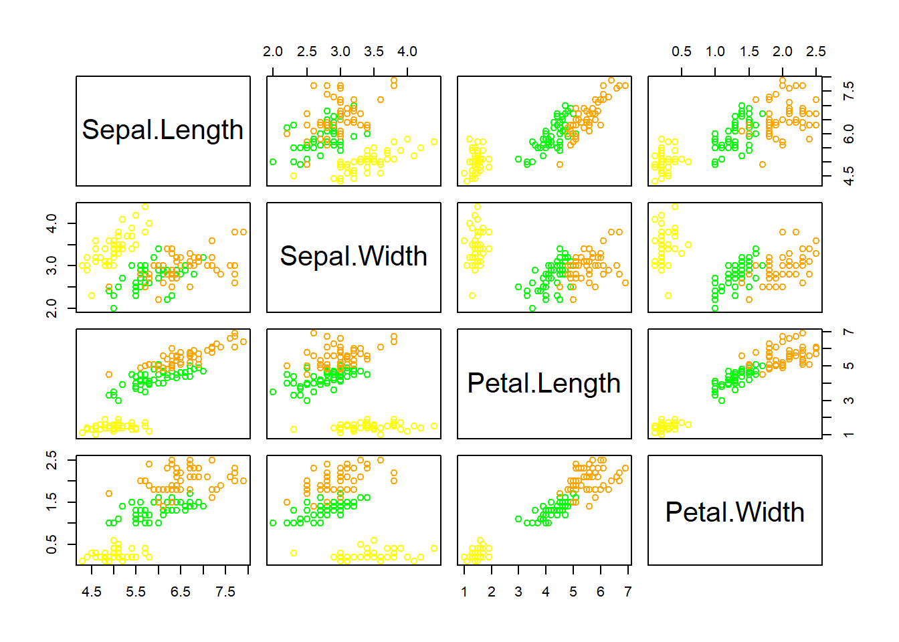
To get the Pearson correlation coefficients r using cor function
cor(iris[,1:4]) Sepal.Length Sepal.Width Petal.Length Petal.Width
Sepal.Length 1.0000000 -0.1175698 0.8717538 0.8179411
Sepal.Width -0.1175698 1.0000000 -0.4284401 -0.3661259
Petal.Length 0.8717538 -0.4284401 1.0000000 0.9628654
Petal.Width 0.8179411 -0.3661259 0.9628654 1.0000000We can also use cor to see the correlation between carat and price.
cor(diamonds$carat,diamonds$price)[1] 0.9215913\(|r|<0.3\), weak correlation
\(0.3<|r|<0.7\), moderate correlation
\(|r|>0.7\), high correlation
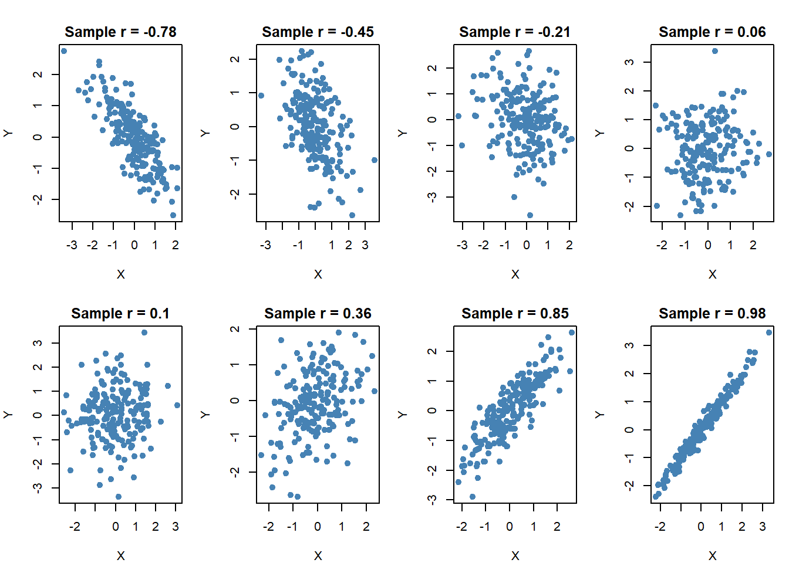
In-class Exercise: Two Continuous Variables by correlation
- Check the Pearson correlation coefficients between
depthandprice.
Visualization on One Continuous and One Discrete Variables using Histogram with Overlay In R
ggplot(data = diamonds, aes(x = price)) +
geom_histogram(aes(fill = cut),bins = 30)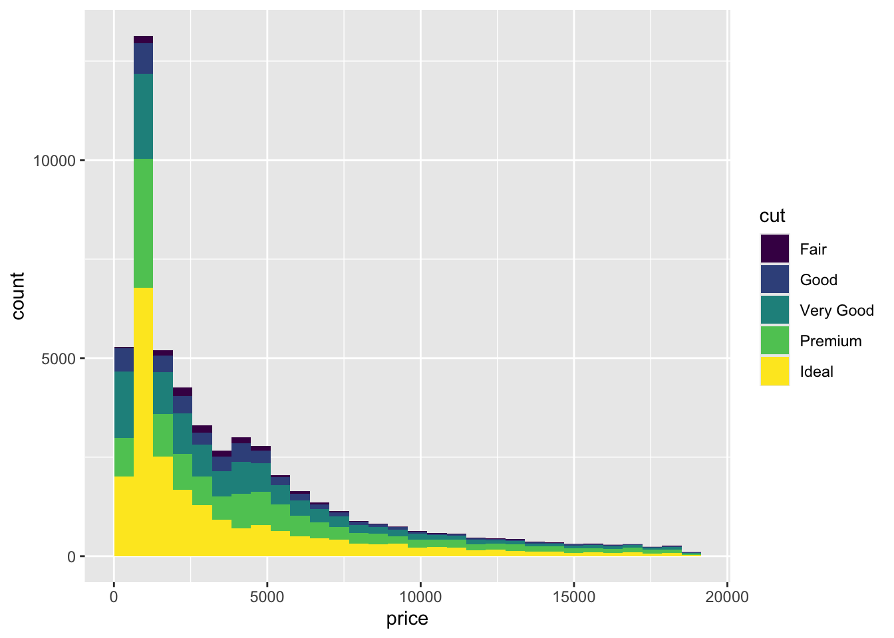
ggplot(data = diamonds, aes(x = price)) +
geom_histogram(aes(fill = cut), bins = 30, color = "black") #have black lines around each bar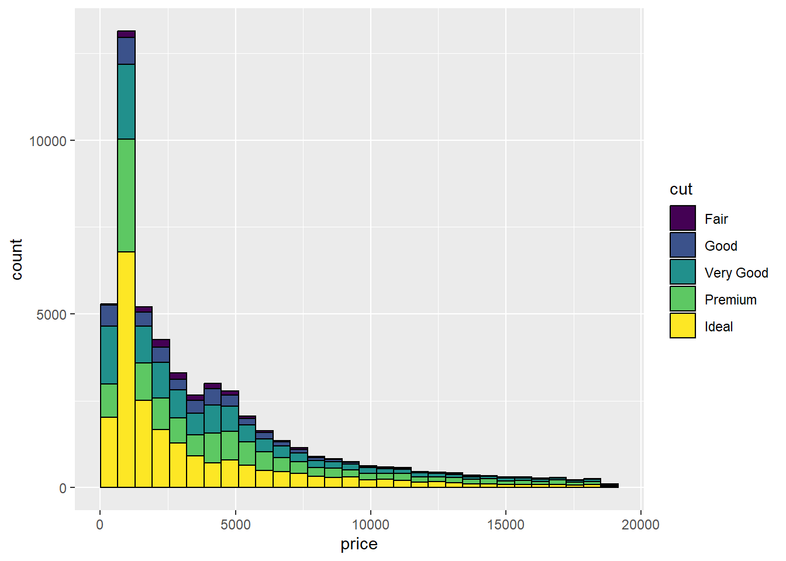
ggplot(data = diamonds, aes(x = price)) +
geom_histogram(aes(fill = cut), bins = 30, color = "black", position = "fill") #normalize the histogram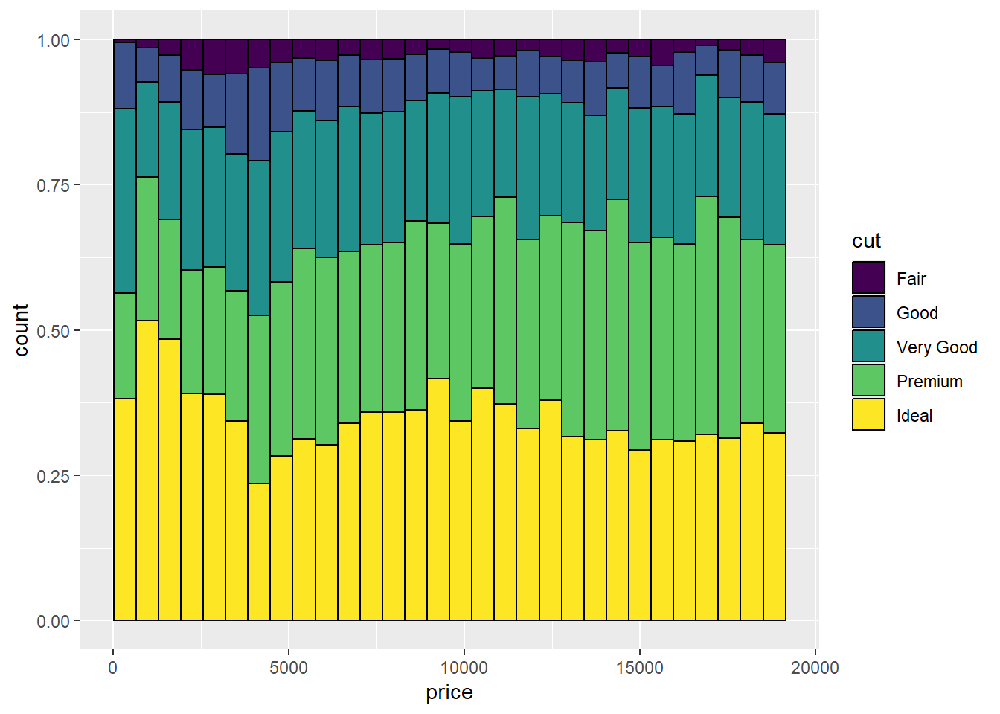
In-class Exercise: Investigate A Categorical and A Continuous Variable by geom_histogram()
Please use
geom_histogram()to investigate the relationship betweenpriceandcolor.Please use
geom_histogram()to investigate the relationship betweenPetal.LengthandSpeciesinirisdata set.
Visualization on One Continuous and One Discrete Variables using Boxplot In R
Another alternative to display the distribution of a continuous variable broken down by a categorical variable is the boxplot.
ggplot(data = diamonds, mapping = aes(x = cut, y = price)) +
geom_boxplot()
We see much less information about the distribution, but the boxplots are much more compact so we can more easily compare them (and fit more on one plot). It supports the counterintuitive finding that better quality diamonds are cheaper on average!
To make the trend easier to see, we can reorder cut based on the median value of price:
ggplot(data = diamonds) +
geom_boxplot(mapping = aes(x = reorder(cut, price, FUN = median), y = price))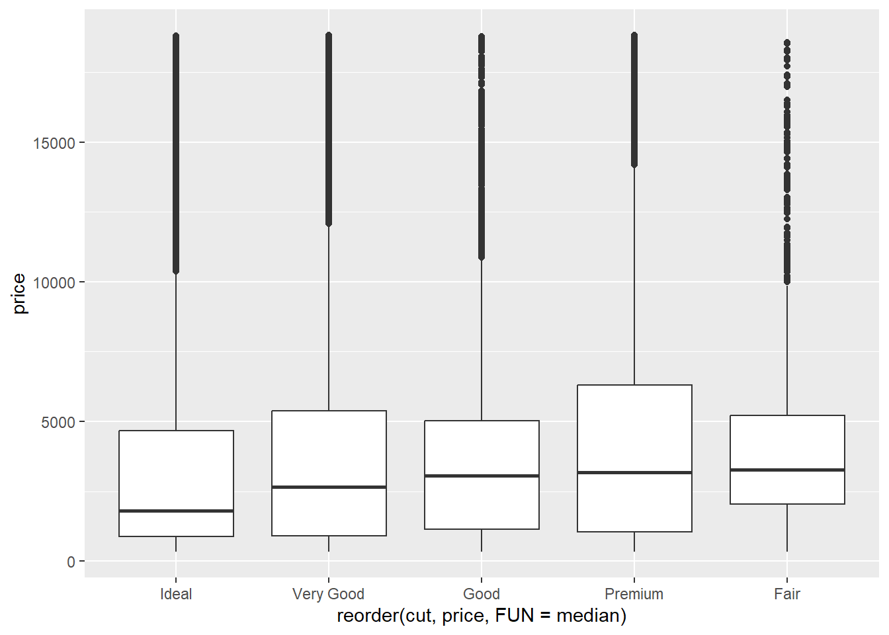
If you have long variable names, geom_boxplot() will work better if you flip it 90°. You can do that with coord_flip().
ggplot(data = diamonds) +
geom_boxplot(mapping = aes(x = reorder(cut, price, FUN = median), y = price)) + coord_flip()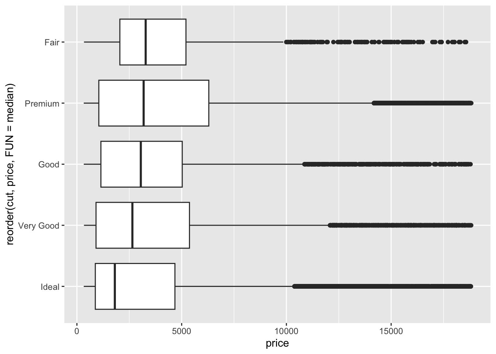
In-class Exercise: Investigate A Categorical and A Continuous Variable by geom_boxplot
Please use
geom_boxplot()to investigate the relationship betweenpriceandcolor. You can choose to flip the boxplot or not.Please use
geom_boxplot()to investigate the relationship betweenPetal.LengthandSpeciesin theirisdata set. You can choose to flip the boxplot or not.
We will introduce ANOVA test to check the association between one numerical variable and one categorical variable in the future.
Visualization on a Categorical/Discrete Variable
From the above information, we know cut is a categorical field with five levels. We can use barplot to visualize the distribution of the categorical/discrete variable.
barplot(table(diamonds$cut)) #regular way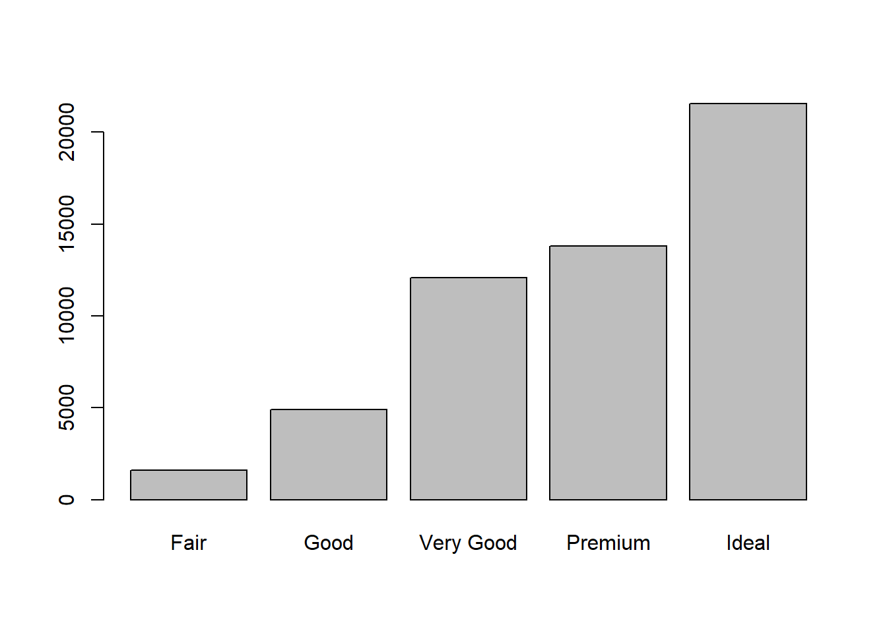
ggplot(data = diamonds) +
geom_bar(mapping = aes(x = cut)) #we can also use ggplot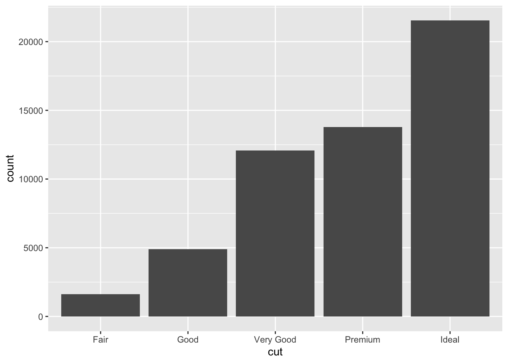
In-class Exercise: geom_bar()
Please use barplot and geom_bar() to investigate clarity attribute in diamonds data set.
Visualization on two Categorical/Discrete Variables using Barplot with Overlay In R
ggplot(data = diamonds, aes(x = cut)) +
geom_bar(aes(fill = color)) 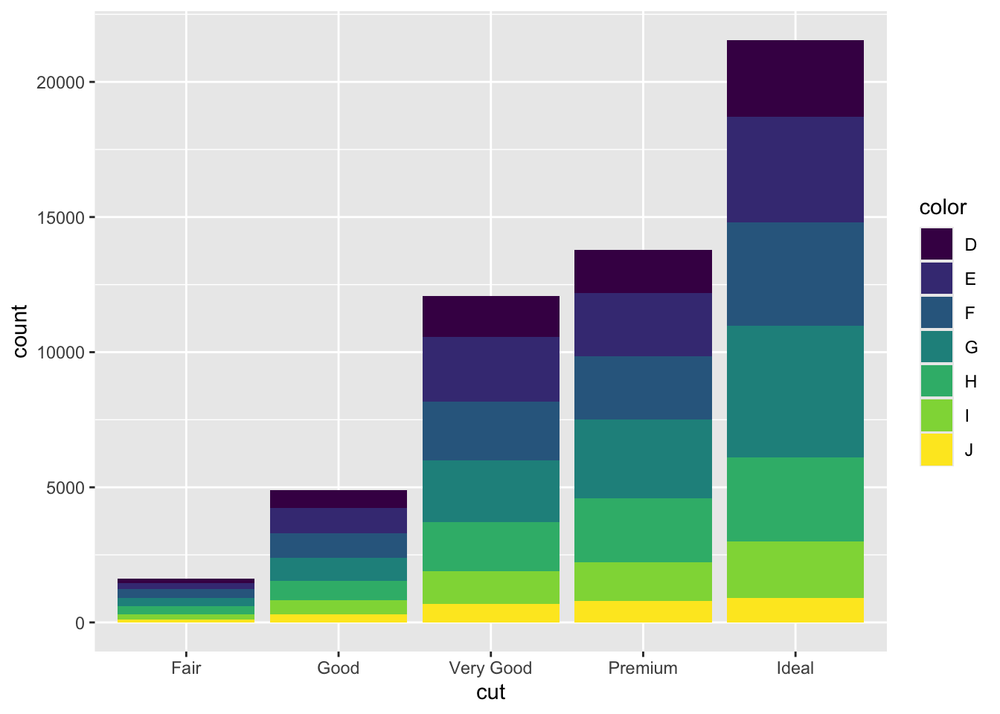
ggplot(data = diamonds, aes(x = cut)) +
geom_bar(aes(fill = color), position = "fill") #normalized the barplot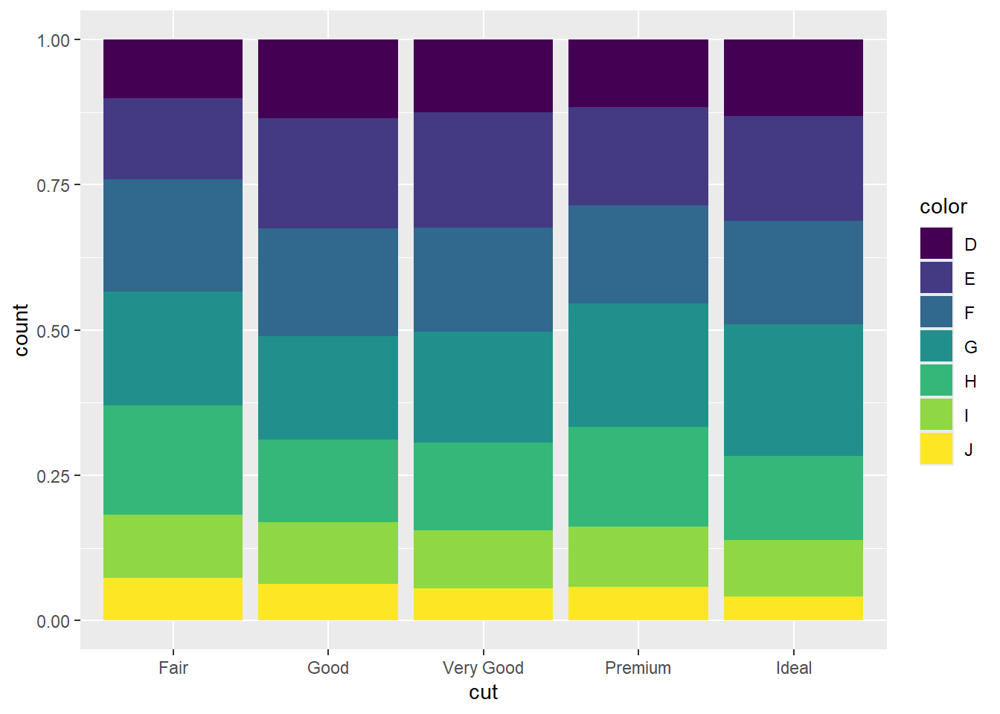
ggplot(data = diamonds, aes(x = cut)) +
geom_bar(aes(fill = color), position = "fill") +
coord_flip() #normalized the barplot and make it horizontal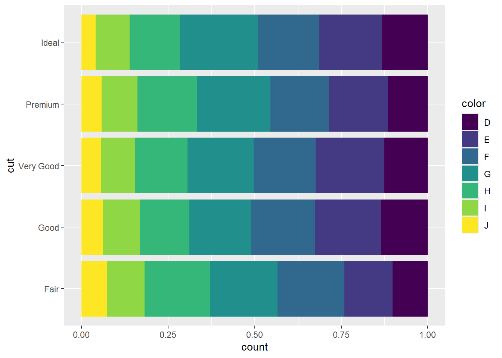
To visualize the co-variation between categorical variables, we can also use geom_count()
ggplot(data = diamonds) +
geom_count(mapping = aes(x = cut, y = color))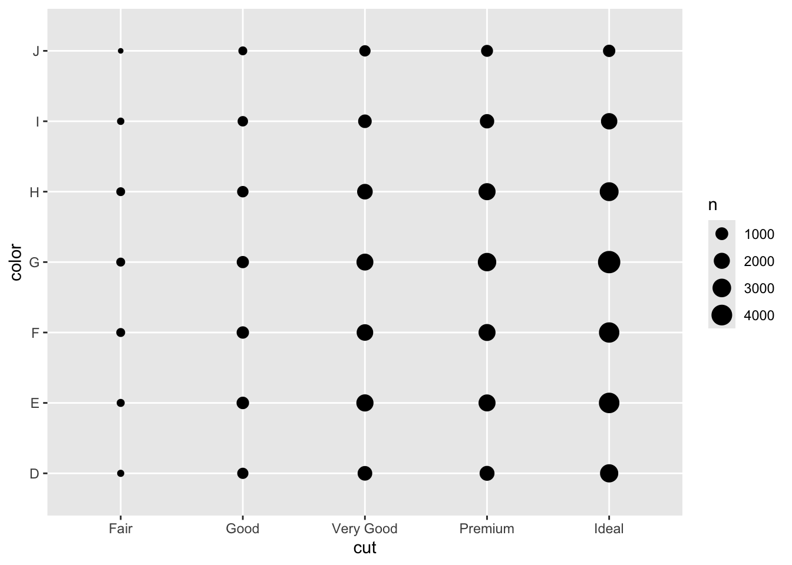
The size of each circle in the plot displays how many observations occurred at each combination of values. Co-variation will appear as a strong correlation between specific x values and specific y values.
In-class Exercise: Investigate Two Categorical Variables
Please use
geom_bar()to investigate the relationship betweenclarityandcut.Please use
geom_count()to investigate the relationship betweenclarityandcut.
We will introduce Chi-squared Test and Cramer’s V Coefficient to check the association between two categorical variables in the future.
Note: Continue to the Python Jupyter Notebook.